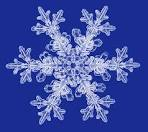

Success is not final; failure is not fetal:It is the courage to continue that counts.
Success usually comes to those who are too busy looking for it.
Develop success from failures.Discouragement and failure are two of the surest stepping stones to success.

Your humaness proves your holiness.
Your imperfection is your superpower.
Your soul's bruises are badges of honor.
Your wounds holds your gift's.
Your feelings are healings.
Your pain reflects your devotion to experiencing and expressing all of life.
Your brokenness demonstratesbyour determination to love and affirms your ability to love and be loved.